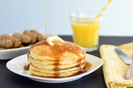
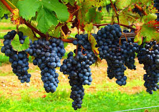

Welcome!
Being part of a church is all about connecting…connecting with God, connecting with others, even connecting to ourselves! We connect by sharing the mundane things of our lives; we read the Bible and look for ways to apply it; we sing songs to God and sense – at least sometimes – that he hears us; we pray for one another and know that we are not alone…that people care about us…that Jesus cares about us. These connections give us strength to face the challenges we encounter each day.
Now that the COVID-19 global pandemic has ended - finally! - El Camino Vineyard Church will continue to “gather virtually” for conversation, Bible reading/reflection, and prayer on Sunday mornings. This seems to work week for us and we'll continue to meet virtually until it no longer serves us. We would love to have you join us Sunday mornings at 10am for our virtual gathering.
In addition to our virtual meetings, we also have regular in-person activities. Recently we went for a hike at Picchetti Winery and got together for a drink on Castro Street in downtown Mountain View, for example.
For more information, please email: Randy Chase.

SUNDAY MORNING
When we could meet in person, our gatherings began with breakfast. We would reconnect after our busy week and catch-up with each other while enjoying a meal. Now that we are meeting virtually, we have to bring our own coffee (!), but we still begin our gatherings catching-up with one another.
After reconnecting with each other, we read from the Bible. We typically go through an Old Testament or New Testament book, chapter by chapter. The continuity helps understand the larger story that is being told in the text. After our reading, we have a conversation.
SOMETHING DIFFERENT
If you've been to church, this part of our Sunday gathering would probably be very different from what you have experienced before. Most churches have a sermon that lasts anywhere from 20 minutes to an hour. After listening to a lot of pastoral monologues, we decided we were ready for something different. While many churchgoers really enjoy sitting and listening to a teaching, others would prefer to have a conversation where they interact with one another, share their experiences, insights, ask questions, and look for ways to apply what they’ve learned to their lives.
After our conversation, we worship God singing songs that have lyrics that are like prayers set to music. We close our time together praying for whatever challenge or need we might have. Our meetings typically last an hour and fifteen minutes.

BLESSED TO BE BLESSED
In the Bible, there is a famous character in the Old Testament. His name was Abraham and he was known as the friend of God. In one of the conversations between God and Abraham, God tells him, "I will bless you...and you will be a blessing to others." (Genesis 12:2) We believe that God has blessed us so that we, too, might be a blessing to others. To that end, we participate in different activities designed to help others. For example, we have helped send a trainer to Haiti to help Haitians develop their job skills; distributed bicycles to people who lost everything in the Santa Rosa fires; send people and finances to help develop caring Christian communities in Spain; provided financial assistance to a home for people with disabilities and lunches to school children during the summer.
RUN CLUB
We encourage people to develop their interests and pursue their passions. Someone in El Camino enjoys running and wanted to invite others to join her...so,,,she started a running club. It began with just 2 or 3 people jogging on Saturday mornings. Today, the club has runs practically every day of the week, with dozens of people participating. If you would like more info, check-out the Meet-Up: Run Club. (Note: The Run Club has recently re-opened many of their runs after having stopped them due to the pandemic.)
El Camino Vineyard Church is part of the Vineyard family of churches. For more info, go to: Vineyard USA